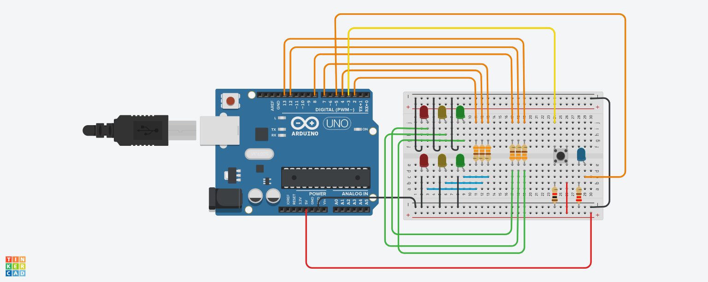
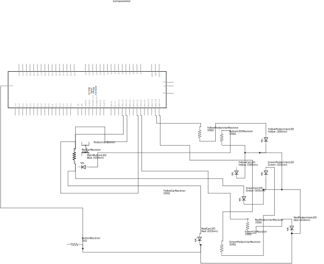

Questo circuito elettronico simula due semafori: uno per i pedoni e uno per le automobili.
Questo viene fatto tramite un Arduino e due gruppi di tre LED: rosso, giallo e verde, che si accendono a intervalli regolari.
Inoltre, è presente un interruttore per far accendere il LED verde dei pedoni unicamente una volta che quello delle automobili è passato al rosso.
Lo stato del pulsante (premuto / non premuto) è rappresentato da un LED blu vicino ad esso che si accende e rimane acceso appena viene premuto.
Gli intervalli delle automobili durano quanto segue:
Rosso: 7 secondi,
Giallo: 3 secondi,
Verde: 3 secondi,
Giallo: 3 secondi.
Rosso: 7 secondi,
Verde: 20 secondi,
Giallo: 10 secondi.
Schema grafico:
Schema elettrico:
